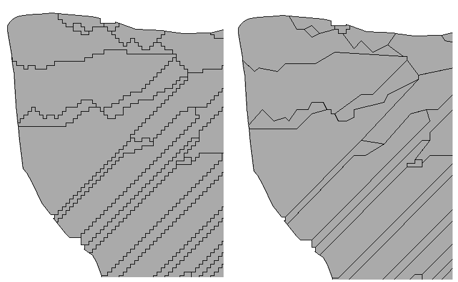

NAME
m.douglas - smoothing areal entities (Douglas Peucker algorithm)
KEYWORDS
vector, generalization, node, Douglas-Peucker
SYNOPSIS
m.douglas
m.douglas help
m.douglas input=name output=name dist=float [--overwrite] [--verbose] [--quiet]
Flags:
- --overwrite
- Allow output files to overwrite existing files
- --verbose
- Verbose module output
- --quiet
- Quiet module output
Parameters:
- input=name
- Input vector map
- output=name
- Output vector map
- dist=float
- Douglas Peucker distance threshold (in map units)
DESCRIPTION
m.douglas script allows the user to generalize areal boundaries; it is based on the well-known Douglas-Peucker algorithm (See Douglas & Peucker, 1973).
NOTES
This script works only on lines with 90° angles (i.e. lines issued of
vectorization of raster cells), all the other lines won't be modified.
If the user wants to generalize all lines of a vector layer, v.generalize command should be used.
EXAMPLES
Areal boundaries generalized with a distance of 5
GRASS 6.3.0 :~ > m.douglas input=polygon1 output=polygon2 dist=5
|

|
|
Input layer (left) ; Output layer (right)
|
SEE ALSO
v.generalize
REFERENCES
David Douglas & Thomas Peucker, "Algorithms for the reduction of
the number of points required to represent a digitized line or its
caricature", The Canadian Cartographer 10(2), 112-122 (1973)
AUTHORS
Michael Rabotin, UMR LISAH, Montpellier, France
rabotin@supagro.inra.fr
Last Changed: 23 January 2012
Main index
Copyright UMR LISAH OpenFluid